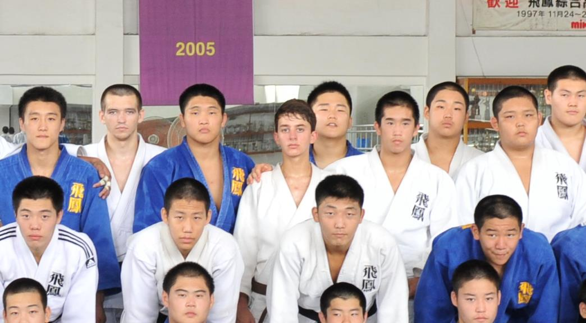

Judo

This sport is the reason I am where I am today and most importantly why I am the person I have become. To put it in perspective, when you practice a sport for 16 of your 20 years it is very hard to know any other lifestyle. Growing up, this sport was part of my identity; all I was taught since I was 4 years old was to excel academically and fight to win. And naturally, I grew up to excel at school and win as the Puerto Rican national champion of my category various years. The discipline and perseverance this sport instilled in me is something I will never be able to shake away. I will fight to win and learn from my losses to come back stronger.
My career and accolades throughout high school:
Below is a list of some competitions I participated in (sadly I didn't win them all) and some accolades I received in the last 4 years of my high school (2011-2015).
2012 European Cup: Represented Puerto Rico in European Cup Tournaments in Spain and Ukraine
2012 World Judo Championships: Represented Puerto Rico in Ukraine in 9th Grade in weight division -55Kg Age Under 18
2013 World Judo Championships: Represented Puerto Rico in Miami in 11th Grade in weight division -60kg Age Under 18.
2012 US Open Championships: Awarded Second Place
2013 US Open Championship: Awarded Third Place
2012 Puerto Rican National Champion
2014 Puerto Rican National Champion
2014 Pan-American Championships: Awarded 7th Place in Colombia
2014 Central American Championships: Represented Puerto Rico in Colombia -60Kg Age Under 18 Awarded 3rd place
2014 World Circuit Judo Tournaments (Florida): Age Under 18 Weight Division -60Kg Awarded Second Place
2014 World Circuit Judo Championships (Puerto Rico): Age Under 18 Weight Division -60Kg Awarded Seventh Place
Countries where I trained and competed: USA, Holland, South Korea, Germany, Brazil, Argentina, Spain, Ukraine, Colombia